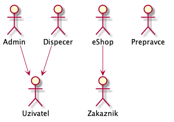
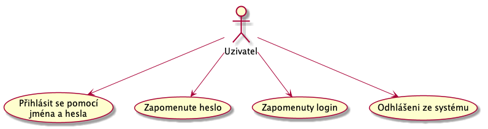
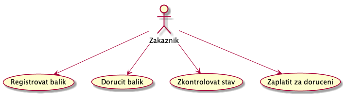
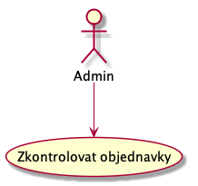
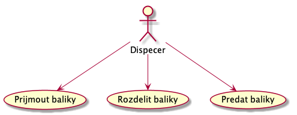
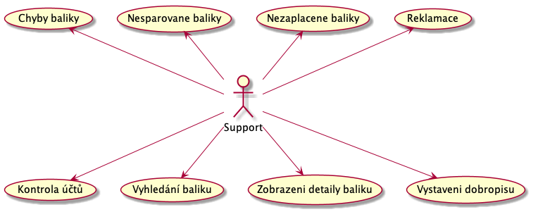
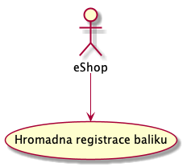

Analýza
Role
Mame tyto role:

Uživatel
Predstavuje nekoho, kdo ma pristup do systemu. Podle jeho dalsi specializace ma dalsi moznosti.

Uzivatel muze:
- UC-00 - Přihlásit se pomocí jména a hesla.
- UC-01 - Zapomenute heslo.
- UC-02 - Zapomenuty login.
- UC-03 - Odhlášeni ze systému.
UC-01 a UC-02 ted nebudem resit, stejně tak s tím spojené UC.
Zákazník
Zakaznik nasi dorucovaci sluzby. Muze to byt fyzicka osoba nebo spolecnost.

Zákaznik muze:
- UC-04 Registrovat balik
- UC-05 Dorucit balik do depa. Pouze zakaznikovi nabidnem moznost poslat libovolnou postou nebo fyzicky prinest na sberne misto.
- UC-06 Sledovaní balíku. Zákazník musí mít možnost sledovat zásilku. Kde je a co se s ni deje.
- UC-07 Zaplatit za doručeni. Posledni krok UC-04.
TODO negativni scenare
Admin
Pracovnik dorucovaci sluzby, ktery dohlizi na fungovani systemu.

UC admina nebudem v první fázi řešit.
TODO aspon si v bodech sepsat,co by tu mělo být
Dispečer
Pracovnik dorucovaci sluzby, odpovedny za prevzeti baliku od zakaznika a predani prepravci.

Dispecer musi byt v depu. Depo bude umistene tak, aby bylo v dobrem dosahu prepravcu. Co dispečer dela:
fronty jsou minimalne dve.
- UC-20 - Přijetí balíku.
- UC-21 - Zpracování přijatých balíku.
- UC-22 - Zpracování čekajícich balíků.
- UC-23 - Předání balíků koncovému dopravci.
Support
Pracovnik nasi dorucovaci sluzby. Je odpovdny za hladky provoz sluzby. Vyrizuje reklamace, nesparovan baliky a pomoha s procesem doruceni baliku.

Support může být fyzicky na centrále. Je odpovědný za:
- Podpora uzivatelu
- UC-31 Zmena/obnova hesla
- UC-32 Zapomenuté přihlašovací jméno
- UC-33 - Kontrola bankovního účtu.
- UC-34 - párování s objednávkami. Určení koncového dopravce.
- UC-35 - Vyhledaní balíku podle kódu, adresy, příjemnce a odesílatele.
- UC-36 - Zobrazení detailů balíku.
- UC-37 - Vystaveni dobropisu - na základě emailu nebo telefonátu.
- UC-38 - Urgovani zaplacení, po ??? dnech od doruceni do depa nebo podaní objednávky.
- UC-39 - Reklamace, oncall/email. musime se napojit na last mile prepravce informace o zasilce.
- UC-40 - Kontrola chybové fronty s dispečerem. Budou si volat?
- UC-41 - Rozhodnutí o předaní dopravci. Musí být možnost kdykoliv z jakékoliv fronty balík přesunout do fronty ke konkrétnímu dopravci. Je to pro reklamace a storna objednávek.
eShop
Zakaznik, ktery ma moznost zadavat hromadne posilani.

Zákazním může:
- UC-60 - Hromadná registrace balíků